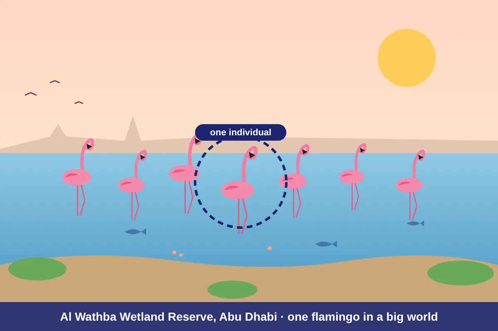
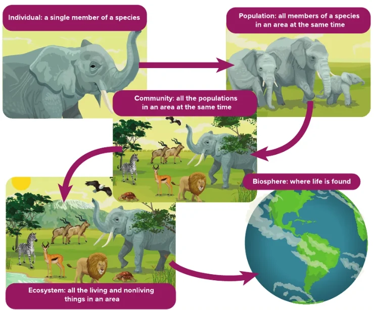
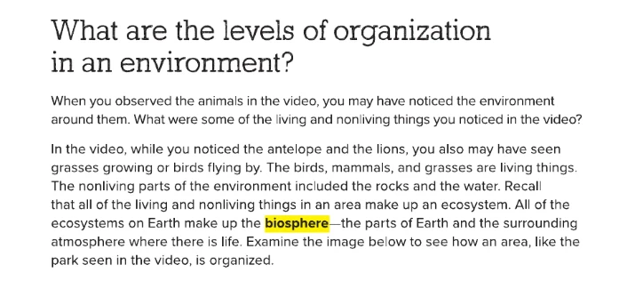
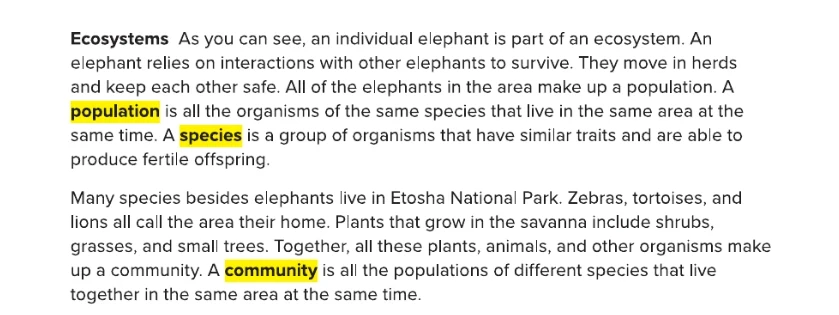

Resources in Ecosystems
Lesson 1 · Levels of organization in an environment
 UAE NATIONAL CHARTER · الميثاق الوطني
UAE NATIONAL CHARTER · الميثاق الوطنيMeet your UAE Values Team
Five friends will coach you through today's ecosystem mission. Tap a character to discover their job today!
Lesson map · 45 minutes · tap any activity
Objectives, success criteria & key words
Describe the levels of organization and the parts of an ecosystem.
- I can tell the difference between living and nonliving things in an environment.
- I can define species, population and community, and give an example of each.
- I can put the five levels of organization in order, from individual to biosphere.
- I can explain which resources living things get from their ecosystem.
Kickoff: starter + attendance

- Say “present” and settle in your seat.
- Think: list 3 living things and 3 nonliving things you can see from your classroom window.
- Answer the 5 true/false questions on the next slide on your own: no peeking at a friend's answer!
Pre-assessment: what do you know?
Hook: the flamingo mystery

A winter morning at Al Wathba Wetland Reserve…
Shamma looks through her binoculars and spots one pink flamingo. She zooms out: there are hundreds of flamingos! Then she notices fish, tiny shrimp, salt bushes and birds of other kinds… and the water, mud and sunshine around them.
“My teacher says this one flamingo is part of the whole planet. How can that be?”
How do scientists describe these bigger and bigger groups?

Watch: from one flamingo to the whole planet (2.5 min)
Encounter: living or nonliving?
Tap each example: is it living or NONLIVING? Tap again to change.
- grow and develop
- need food or energy
- reproduce (make more of their kind)
- respond to their surroundings
Advanced fact: scientists call living parts biotic and nonliving parts abiotic.
Your ecosystem address (the unconventional version)
The levels are like your address: you → your class (all Grade 6 students) → your whole school (students, teachers, the garden's plants and birds) → the school plus its buildings, air and sunlight → planet Earth. Each step zooms out!
Living things are organized in levels: individual → population → community → ecosystem → biosphere. All the ecosystems on Earth make up the biosphere.
Textbook: what are the levels of organization?

Textbook: from one elephant to the whole Earth
Textbook: species, population and community

Zoom out: the five levels in action
Build an ecosystem: Sir Bani Yas Island
The Arabian oryx nearly disappeared from the wild. Today, protected herds live on Sir Bani Yas Island in Abu Dhabi with gazelles, ghaf trees and many other living things.
Add things to the island and watch which level you have built.
Resources: what does an ecosystem give?
Living things get the resources they need from the living and nonliving parts of their ecosystem. Think of an example for each, then tap Reveal.
🍃 Food
💧 Water
🏠 Shelter
☀️ Sunlight, air & space
Field study: quadrat survey
- Place the quadrat on the ground in the school garden.
- Counter: count the individuals of each species inside the square.
- Recorder: write each population in the table.
- List the nonliving things you see in the square too.
| Species | Number of individuals (population) | Living or nonliving? |
|---|---|---|
| Grass plants | Many (e.g. 30) | Living |
| Ants | e.g. 12 | Living |
| Stones | e.g. 6 (not a population!) | Nonliving |
Pause and check
Formative check: tap an answer. Wrong? Read the hint and try again!
Put the levels in order
Say the order with your partner, then tap the levels from smallest to largest. Tap a numbered level to undo.
Ecosystems worksheet (1/2)
B. All the ecosystems on Earth
C. A single member of a species
D. All the living and nonliving things in an area
E. All the members of one species in an area at the same time
Ecosystems worksheet (2/2)
| Example | Level |
|---|---|
| One camel walking in the Liwa desert | |
| All the green turtles in the Arabian Gulf | |
| The mangrove trees, crabs, fish and birds at Eastern Mangroves | |
| The Hajar Mountains: plants, animals, rocks, streams and sunlight | |
| All the places on Earth where life is found | |
| All the date palms in one Al Ain oasis |
How is one flamingo at Al Wathba part of the whole biosphere? Use population, community and ecosystem.
✓ The flamingo belongs to a population: all the flamingos at Al Wathba.
✓ That population lives with fish, shrimp and plants in a community.
✓ The community plus the water, mud and sunlight is an ecosystem, and all of Earth's ecosystems make up the biosphere.
Green, orange or purple? Choose your level
Green · Support
- Complete: “A single member of a species is an ____.”
- Circle the nonliving thing: oryx / sand / ghaf tree.
- True or false: a population has many different species.
- Which is bigger: a community or an ecosystem?
1. individual
2. sand
3. False (only one species)
4. an ecosystem
Orange · At level
- Draw five boxes from individual to biosphere. Add a UAE example in each.
- Explain the difference between a population and a community.
- List three resources an Arabian oryx gets from its ecosystem.
1. e.g. one oryx → all oryx on Sir Bani Yas → oryx, gazelles and ghaf trees → + sun, water, sand → Earth.
2. A population is one species; a community is all the populations of different species in an area.
3. Food (grasses), water, shelter (shade of trees), space.
Purple · Challenge
- A horse and a donkey can have a mule, but mules cannot reproduce. Are horses and donkeys one species? Explain.
- Predict what happens to the flamingo population if Al Wathba's water dries up.
- Design a fair survey to compare the ant populations in two parts of the school garden.
1. No: their offspring (the mule) is not fertile, so they are different species.
2. It would fall: flamingos lose water, food (shrimp, algae) and shelter, so they die or move away.
3. Same size quadrat, same time of day, several throws in each area; count ants and compare the averages.
Summative: Ecosystem Master quiz
Mystery solved!
Shamma's flamingo is an INDIVIDUAL. All the flamingos at Al Wathba are a POPULATION. Add the fish, shrimp and plants and you have a COMMUNITY. Add the water, mud and sunshine and it becomes an ECOSYSTEM. And all the ecosystems on Earth together make the BIOSPHERE. One bird, five levels, one planet!
I can tell the difference between living and nonliving things in an environment.
I can define species, population and community, and give an example of each.
I can put the five levels of organization in order, from individual to biosphere.
I can explain which resources living things get from their ecosystem.
Which value did you show today?
Tap the character whose value you showed in this lesson. Then tell your partner one real example!
One of many, part of it all
Like one flamingo in a flock, you belong to your class, your school, your UAE and our whole world. Every one of you counts!